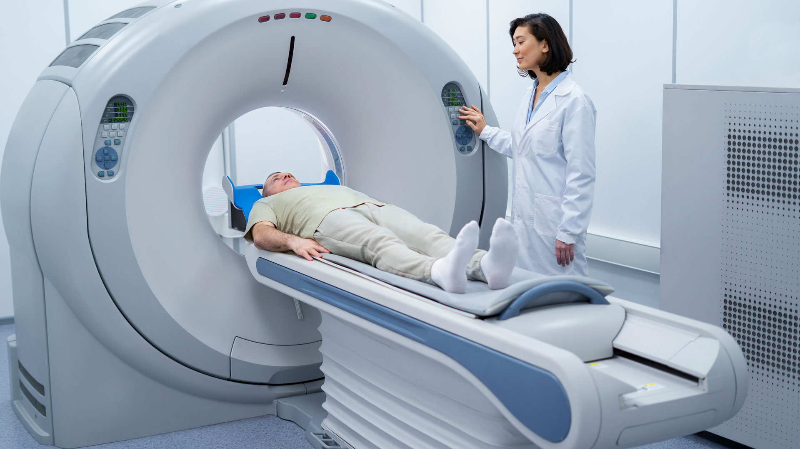

Posicionamiento y Preparación del paciente
Selecciona una modalidad para acceder a las pautas de posicionamiento, protocolos y preparación clínica.
Rayos X (Radiología Convencional)
Proyecciones anatómicas de Cráneo, Tórax, Abdomen, Pelvis, Columna y Extremidades.

Escáner o TC (Tomografía Computarizada)
Protocolos clínicos, preparación previa (ayuno y vía venosa), posiciones, centraje y rangos de corte.
Ecografía (Ultrasonido)
Estudios no ionizantes mediante transductores (Convexo, Lineal, Endocavitario), preparación de paciente y ecogenicidades.